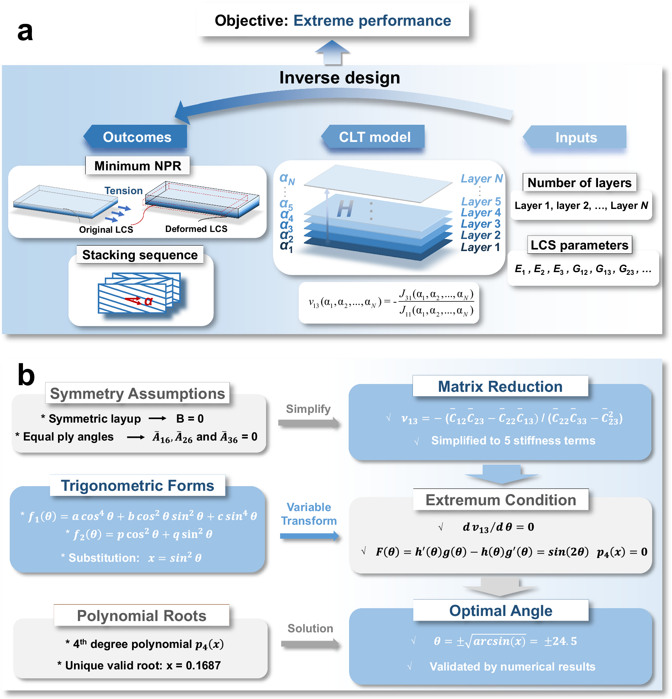
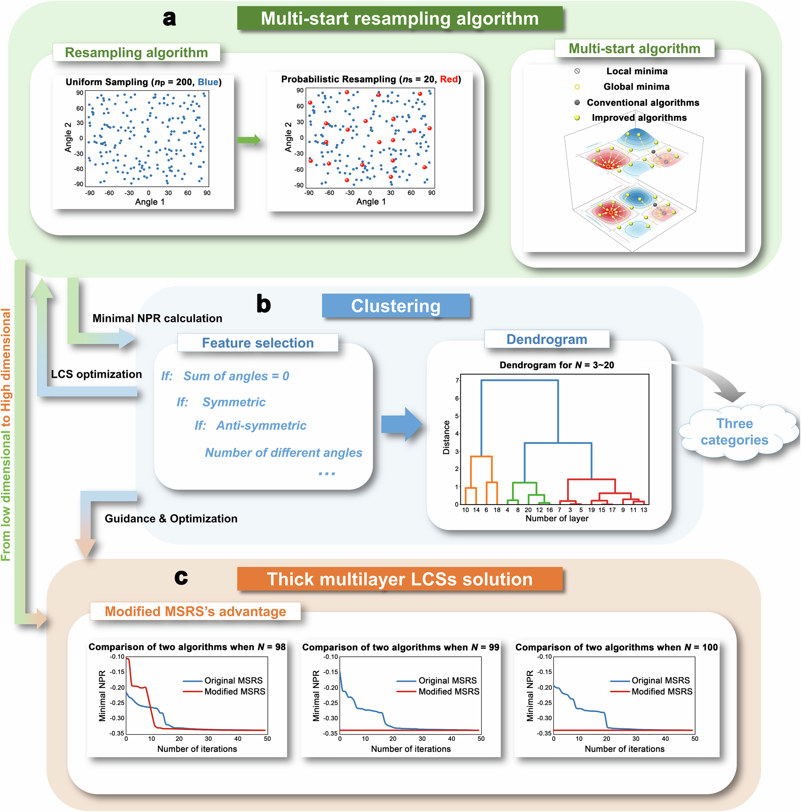
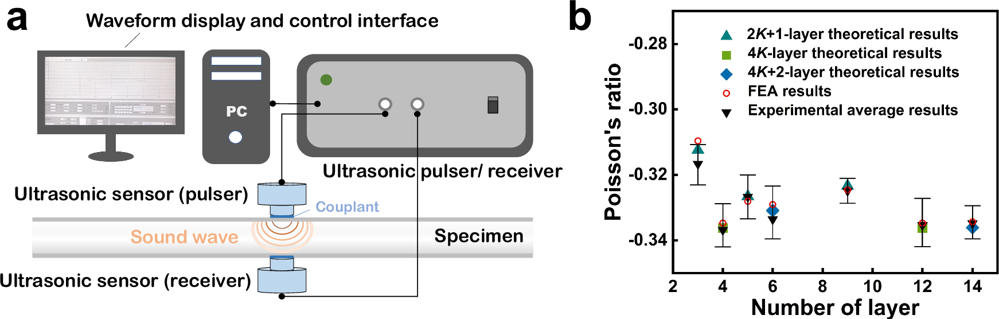
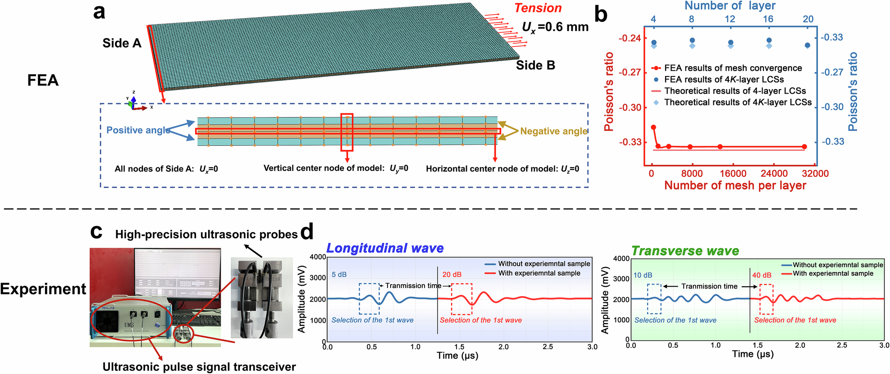
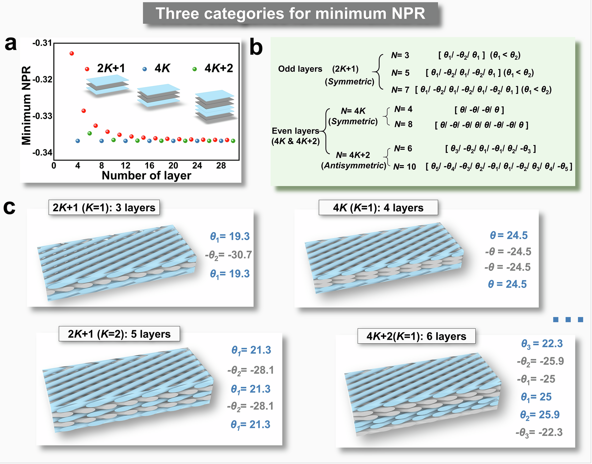
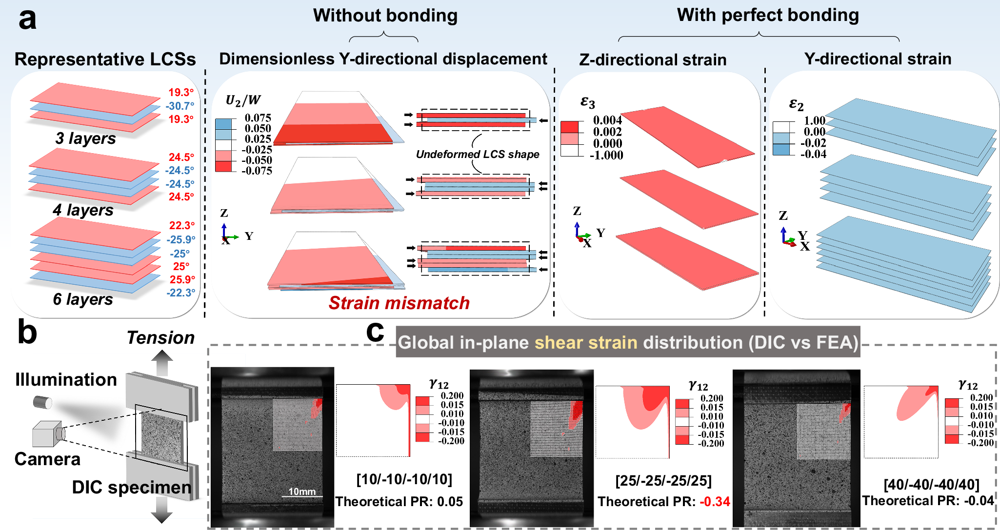

全文精读
机器学习辅助仿生层状复合结构最大负泊松比性能逆向设计
Machine learning-enabled inverse design of bioinspired layered composite structures with maximum auxetic performance
解读更新 2026-10-20 09:27 · 依据论文全文整理
全文精读已完成，文章版正在逐步升级。现有内容可继续阅读。
本文针对多层复合结构铺层角度维数高、最小面外泊松比难以搜索的问题，将层合力学、多起点重采样、局部优化与层次聚类结合，提炼三类铺层规律，并利用规律降低高层数设计的搜索维数。 作者通过有限元、超声测量和数字图像相关分析验证设计及变形机制，报告4K层结构最小泊松比为−0.3367。 阅读重点是物理模型与解族发现的结合，但解析表达和铺层符号存在不一致，补充证明亦未随资料提供。
研究问题
作者研究如何在层数增加、铺层角度组合迅速扩大的情况下，寻找最小面外泊松比及对应铺层。预先限定对称性或角度顺序虽然便于求解，却可能限制候选范围。 目标不仅是获得较强负泊松比响应，还要解释最优解随层数变化的规律，而非仅比较少量既定构型。
方法与路线
研究以层合力学显式计算角度对应的泊松比，采用距离平方加权重采样选择初始点，再以BFGS开展局部搜索。 各层数保留最低泊松比的十个铺层，通过对称性、角度数量等特征实施层次聚类，并将所得规则用于高维搜索降维。
创新与比较
解读：值得关注的贡献不是提出新的神经网络，而是让物理计算、优化搜索与可解释分类形成反馈。聚类发现的铺层家族进一步转化为搜索约束，使4K类仅需优化一个角度变量。 作者还以层间取向导致的应变失配解释厚度方向膨胀，将设计规律与力学机制联系起来。
证据与发现
作者将最优铺层分为4K、奇数层和4K+2三类，报告4K类最小泊松比为−0.3367。 在高维算例中，N=100和N=99的搜索时间分别降至原来的1/30和约1/55。 超声实验与理论、有限元趋势一致；DIC支持面内剪切应变分布的模拟结果，而非直接测量上述最小泊松比。
局限与边界
核对记录列出图2b反解公式根号位置错误，影响最优角解析表达，并非公式空缺；正负角数量文字与实例相反；六层铺层末层符号图文不一，影响复现。不能据此声称解析验证完整。补充证明未提供，有限采样找全最优解及超声换算适用条件仍需核查。 原文核对： 图2b“Optimal Angle”框内，原图将根号置于 arcsin(x) 外，显示为 θ=±√(arcsin(x))=±24.5；这与同图 x=sin²θ 的反解关系不一致。由该代换应得到 θ=±arcsin(√x)，但这是核对推导所得纠正，不是原图写法。缺陷影响最优角解析表达的准确性，不妨碍读取该页其余内容，也不能据此否定其数值搜索结果。
方向关联
解读：对结构设计，本文展示了从数值最优解提炼对称性规则、再用于降维的路径；对可靠性研究，完全黏结约束失配的机制提示界面状态可能影响负泊松比响应。 与智能运维的联系目前仅是潜在迁移：剪切应变场可作为监测候选信息，但本文没有验证损伤识别能力。
后续研究建议
建议：复现前先核对最优角反解、奇数层符号计数及六层铺层末层符号，再检查超声换算对各向异性层合板的适用性。 后续可在制造角度偏差、界面退化与循环载荷下比较性能稳定性；这些属于研究设想，并非作者已完成的可靠性验证。
阅读建议
推荐结构逆向设计研究者重点阅读其“搜索—聚类—规则降维—实验核验”流程；可靠性研究可借鉴机制分析，但不能将其视为疲劳寿命或运维诊断成果。
原图未改动。以下图注来自标注的来源，不据此补写摘要未报告的实验结论。
已取得的论文原图




原文图注与出处
Schematic of the ML method, including ( a ) the multi-start resampling algorithm (blue dots represent the initially generated uniform samples, and red dots denote the points obtained after probabilistic resampling in the multi-start algorithm) and ( b ) the clustering technique. c Improvement in computational efficiency for high-dimensional problems using the layup characteristics of these three categories.
Li, Yuze et al.
原文图页 · CC BY 4.0



原文图注与出处
a Boundary conditions and load of the finite element model for 4 K -layer LCSs. b Mesh convergence results of Finite element analysis (FEA) (red horizontal and vertical axes) and the comparison between the theoretical results of 4 K -layer LCSs and the FEA results (blue horizontal and vertical axes). c Experimental apparatus for performing non-destructive ultrasonic testing. d Schematic diagrams of longitudinal and transverse wave measurements of the speed of sound.
Li, Yuze et al.
原文图页 · CC BY 4.0已取得的论文原图




原文图注与出处
a The FEA results of deformation mechanism of LCSs exhibiting negative Poisson’s ratio (NPR). In the absence of bonding, three representative LCSs demonstrated layer separation and strain mismatch. With perfect bonding, the strain in the Z-direction is positive, while the strains in the Y-direction for all layers are negative. To reveal the relationship between the minimum NPR and strain. b Schematic diagram of the DIC experiments. c Comparison of shear strain cloud map between DIC and FEA results for a quarter range on the top right of the specimen, indicating the correlation between NPR and in-plane shear strain.
Li, Yuze et al.
原文图页 · CC BY 4.0查看公开摘要
Layered composite structures inspired by biological tissues can exhibit out-of-plane negative Poisson’s ratio, but identifying layups that maximize auxetic performance is challenging in high-dimensional designs. Here, we introduce an inverse design framework that searches for laminate layups with minimum Poisson’s ratio. The approach combines multi-start resampling with machine learning–guided clustering to map layup families across layer numbers. Analytical relations from laminate mechanics link ply angles to effective properties, and computer simulations with laboratory measurements validate the predicted minima. The analysis resolves three layup categories, explains how shear-strain mismatch across bonded plies drives through-thickness auxetic expansion, and shows that simple symmetry rules reduce the search space. The framework reproduces previously reported minima and uncovers layups that approach lower Poisson’s ratios under practical constraints. These results provide a physics-grounded, data-efficient route to engineer layered composite structures with strong auxetic responses and offer concise design rules for impact mitigation, vibration control, and flexible structures.